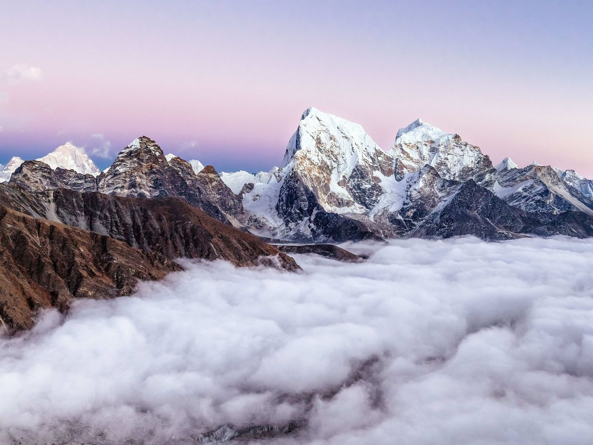

Discover the beauty of Nepal's closest Himalayan valley from Kathmandu. Trek through ancient Tamang villages, witness stunning sunrise from Kyanjin Ri, and explore the famous cheese factory at 3,870m.
Overview
The Langtang Valley Trek is one of the most beautiful and accessible treks in Nepal, often called "the Valley of Glaciers." Located just north of Kathmandu, this trek offers a perfect blend of natural beauty, cultural immersion, and Himalayan adventure without the crowds of more popular routes.
Your journey takes you through pristine rhododendron forests, past glacial rivers, and into traditional Tamang villages where ancient Buddhist traditions remain deeply woven into daily life. The highlight of the trek is the pre-dawn hike to Kyanjin Ri, where you'll witness one of the most spectacular sunrise views in the Himalayas, with snow-capped peaks glowing pink and gold in the morning light.
At Kyanjin village, you can explore the famous cheese factory that has been producing alpine-style cheese since the 1970s, a legacy left by Swiss volunteers. The nearby Buddhist monastery and prayer flags add spiritual dimension to this incredible journey through the heart of the Langtang region.
Day by Day
A carefully planned route ensuring proper acclimatization and unforgettable experiences
Arrive at Tribhuvan International Airport in Kathmandu. Our representative will greet you and transfer you to your hotel. In the evening, enjoy a welcome dinner with a traditional Nepali cultural show. Get briefed about your upcoming trek and check your equipment.
After an early breakfast, begin your scenic drive to Syabrubesi, the starting point of your trek. The 7-8 hour journey takes you through the Trishuli valley, with beautiful views of terraced farmlands, rivers, and mountain landscapes. Arrive in Syabrubesi by late afternoon and rest at a local teahouse.
Begin your trek through lush bamboo and rhododendron forests. Follow the Langtang River as it cascades through narrow gorges. Pass through small villages and settlements, experiencing the warm hospitality of local Tamang people. The trail gradually ascends, offering increasingly spectacular views of the surrounding mountains. Arrive in Langtang village by late afternoon.
Continue your ascent towards Kyanjin village, the highest settlement in the valley. The trail offers breathtaking views of snow-capped peaks and the Langtang Glacier. Upon arrival in Kyanjin, visit the famous cheese factory that has been producing alpine-style cheese since the 1970s. Explore the small Buddhist monastery and enjoy the peaceful mountain atmosphere.
Wake up early for the highlight of your trek - the pre-dawn hike to Kyanjin Ri (4,984m). The 2-3 hour ascent is rewarded with an unforgettable sunrise experience as the first rays of sunlight paint the Himalayan peaks in shades of pink and gold. After enjoying the panoramic views, descend back to Kyanjin for breakfast, then trek back to Langtang village for an
Begin your descent through the beautiful Langtang Valley. The trail follows the river through bamboo forests and small villages. Take your time and enjoy the familiar landscapes from a new perspective. Arrive in Syabrubesi by afternoon and relax at the teahouse.
After breakfast, begin your return drive to Kathmandu. The scenic journey takes approximately 7-8 hours. Arrive in Kathmandu by late afternoon. Enjoy a hot shower and rest at your hotel. In the evening, you can explore the vibrant streets of Thamel or simply relax.
These days are reserved as buffer days in case of unexpected circumstances such as weather delays, flight cancellations, or any other unforeseen events. If everything goes according to plan, you can use these days to explore more of Kathmandu's cultural heritage sites, go shopping for souvenirs, or simply relax and rejuvenate after your trek.
Spend your last full day in Kathmandu exploring the city's rich cultural heritage. Visit the ancient temples of Pashupatinath and Boudhanath, the monkey temple of Swayambhunath, or the historic Kathmandu Durbar Square. In the evening, enjoy a farewell dinner with your trekking team and prepare for your departure.
After breakfast, our representative will transfer you to Tribhuvan International Airport for your departure flight. Depart with unforgettable memories of your Langtang Valley Trek and the warm hospitality of the Nepali people. We look forward to welcoming you back for another adventure in the Himalayas.
Join us for an unforgettable adventure through one of Nepal's most beautiful valleys. Our expert guides ensure safety, comfort, and authentic experiences throughout your journey.
Duration: 12 Days
Group Size: 2-12 people
Availability: Year-round
Questions?
The Langtang Valley trek is considered a moderate trek suitable for people with a reasonable level of fitness. While no technical climbing experience is required, you'll be walking 5-7 hours daily at altitudes reaching 4,984m at Kyanjin Ri. The trails involve some steep ascents and descents, particularly on the way to Kyanjin Ri. However, compared to other popular Nepal treks like Everest Base Camp or Annapurna Circuit, Langtang is relatively easier to access and complete.
Prior trekking experience is helpful but not strictly required for the Langtang Valley trek. The moderate difficulty level makes it accessible to beginners who are physically fit and prepared. If you're new to trekking, we recommend doing some preparation before your trip - regular cardiovascular exercises like hiking, running, or cycling for at least 2-3 months will help.
The best time to trek Langtang Valley is during the spring months (March to May) and autumn months (September to November). Spring offers warm weather, clear skies, and blooming rhododendron forests. Autumn provides crisp air, excellent visibility of the Himalayas, and stable weather conditions. The monsoon season (June to August) brings heavy rainfall, while winter can be extremely cold with snow at higher elevations.
Pack layers of clothing as weather conditions vary significantly. Essential items include: warm fleece or down jacket, waterproof outer shell, comfortable trekking boots, thermal underwear, hiking socks, gloves, warm hat, and sun hat. Other important items: daypack (30-40L), water bottle, sunscreen, sunglasses, headlamp, first-aid kit, and personal medications. You'll also need a sleeping bag (rated to -10°C).
Altitude sickness can occur on the Langtang Valley trek, especially when hiking to Kyanjin Ri at 4,984m. However, the risk is relatively lower compared to higher altitude treks. To minimize the risk: ascend slowly, stay hydrated, avoid alcohol, eat carbohydrate-rich meals, and listen to your body. Our itineraries include proper acclimatization days and our guides are trained to recognize symptoms.
During the trek, you'll stay in teahouses - simple mountain lodges that provide basic but comfortable accommodation. Rooms typically have two beds with blankets and pillows. Hot showers and charging facilities are available at most teahouses (usually for an additional fee). In Kathmandu, you'll stay in a 3-star hotel with comfortable amenities.
Explore More
Journey to the base of the world's highest mountain
View Details